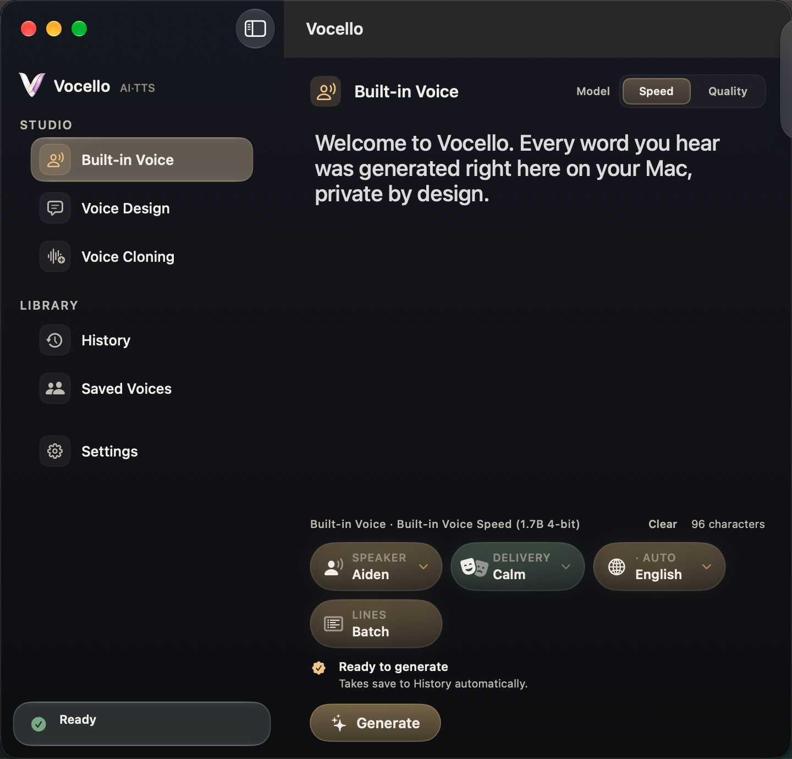
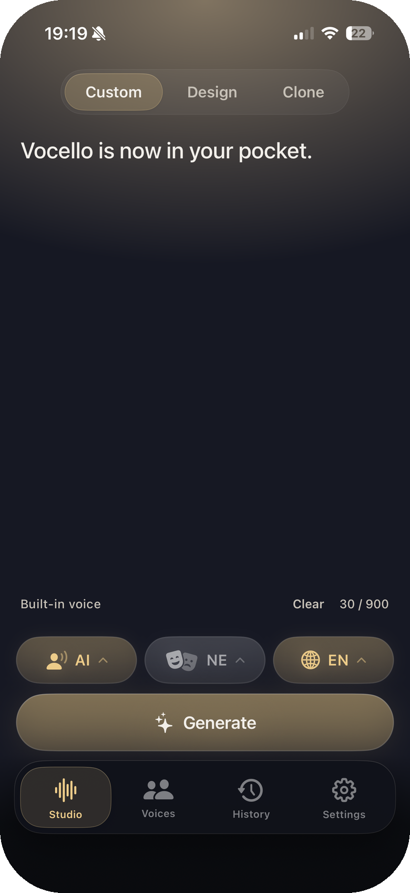

Premium voice studio. Proven performance. Private by design.
Write a script, pick or describe a voice, and generate speech locally on your Mac and iPhone.
Built-in Voice
Voice Design
Voice Cloning
Write a script, pick or describe a voice, and generate speech locally on your Mac and iPhone.

